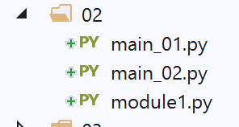
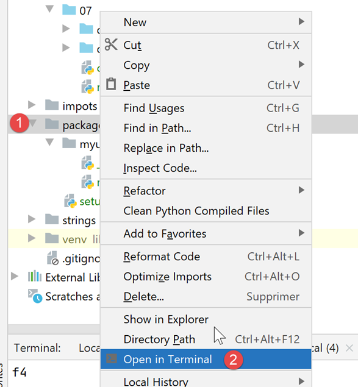
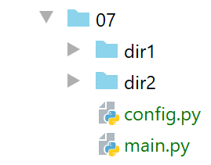

9. 导入
在应用练习第 1 版中遇到的错误促使我们深入探讨 [import] 语句的作用。

9.1. 脚本 [import_01]
脚本 [imported] 将被以下不同脚本（也称为模块）所调用：

# 导入模块
# 每次导入该模块时都会执行此指令
print("2")
# 属于被导入模块的变量
x=4
模块在被导入时即被执行。因此，当导入模块 [imported] 时：
- 第 3 行将被显示；
- 第 5 行中的变量 x 将被赋值；
脚本 [main_01] 如下：
# 导入的模块正在执行
import imported
# 使用导入模块中的变量 x
print(imported.x)
- 第 2 行：导入模块 [imported]。这将触发其执行：
- 将显示数值 2；
- 变量 x 被创建，初始值为 4；
- 第 4 行：使用导入模块中的变量 x；
在 PyCharm 中，报告了一个错误：
在 [1] 中，PyCharm 提示其不认识模块 [imported]。 从技术角度讲，这意味着包含模块 [imported] 的文件夹不在 PyCharm 的 Python 路径中。 Python Path 是指用于查找导入模块的所有文件夹集合。要解决此问题，只需将 [Sources root] 声明为包含模块 [imported] 的文件夹，此处即为文件夹 [import/01]：


完成此操作后，[import/01]文件夹会被添加到PyCharm的Python路径中，错误便会消失：

- 在 [1] 文件中，文件 [01] 的颜色已发生变化；
- 在 [2-3] 中，已无错误；
执行结果如下：
注释
- 第 2 行是导入模块的执行结果；
- 第 3 行显示了导入模块中变量 x 的值；
从这个示例中，我们可以了解到一个重要的概念：导入的模块（或脚本）会被执行。
脚本 [main_02] 如下：
# 导入被导入模块的变量 x
from imported import x
# 显示该变量
print(x)
- 第2行采用另一种导入语法 [from module import objet1, objet2, …]。此处导入变量 [imported.x]。采用此语法，变量 x 成为脚本 [main_02] 中的变量。 此时无需再在其前添加模块前缀 [imported]；
- 第 4 行：显示 [main_02] 中的变量 x；
执行结果如下：
脚本 [main_03] 如下：
# 导入被导入模块中所有可见的内容
from imported import *
# 使用导入模块中的变量 x
print(x)
第 2 行中的 [import *] 表示导入被导入模块中所有可见对象（变量、函数）。
结果如下：
脚本 [main_04] 如下：
# 导入被导入模块中的变量 x
# 并将它重命名为 y
from imported import x as y
# 显示变量 y
print(y)
第 3 行展示了如何从被导入的模块中导入一个对象并为其指定别名。在此，变量 [imported.x] 变成了变量 [main_04.y]。结果与之前相同。
9.2. 脚本 [import_02]

此处的导入模块 [module1.py] 如下所示：
# 一个函数
def f1():
print("f1")
导入的模块定义了一个函数，这是一种常见情况。
脚本 [main_01] 如下：
# import
import module1
# 执行 f1
module1.f1()
- 第 2 行，导入该模块。它将被执行。此处，它不显示任何内容；
- 第 4 行：执行导入模块中的 [f1] 函数；
执行结果如下：
注意：为避免 PyCharm 在导入第 2 行时报错，需将包含 [module1] 的文件夹放入 [Sources Root] 的 PyCharm 中：

在[1]中，放置在[Sources Root]中的[02]文件已变为蓝色。 需要注意的是，此处报告的错误并不妨碍脚本的正常执行。实际上，在执行脚本 [main_0x] 时，该脚本所在的文件夹会被自动添加到 Python 路径中。因此，系统能够找到 [module1]。 今后，当屏幕截图中某个文件夹显示为蓝色时，说明它已被添加到 [Sources Root] 的 PyCharm 中。
脚本 [main_02] 内容如下：
# 导入
from module1 import f1
# 执行 f1
f1()
- 第 2 行导入了 [module1] 模块中的 [f1] 函数；
- 第 4 行，调用了函数 f1；
结果与脚本 [main_01] 的结果相同。
9.3. 脚本 [import_03]

注：[03]位于该项目的[Sources Root]中。
新脚本将导入模块 [module2]，该模块不在与它们相同的文件夹中。
脚本 [module2] 如下：
# 一个函数
def f2():
print("f2")
因此，该脚本定义了一个名为 [f2] 的函数。
脚本 [main_01] 如下：
# 导入 Class2 模块
import dir1.module2
# 执行 f2
dir1.module2.f2()
- 第 2 行：使用特殊标记来指示如何查找模块 [module2]。应将 [dir1.module2] 解读为路径 [dir1/module2]： 要查找 [module2]，需从当前脚本文件夹 [main_01] 开始，然后进入 [dir1]，最终在该处找到 [module2]。 这里需要注意的是，路径的起点是导入脚本所在的文件夹；
- 第4行：用于从[module2]中调用函数[f2]；
结果如下：
第2行，函数[f2]的结果。
脚本 [main_02] 如下：
# 导入模块 dir1.module2 并重命名
import dir1.module2 as module2
# 执行 f2
module2.f2()
第 2 行，将模块 [dir1.module] 重命名，以便简化第 4 行的编写。
脚本 [main_03] 如下：
# 导入模块 dir1.module2 中的函数 f2
from dir1.module2 import f2
# 执行 f2
f2()
这次，在第 2 行，我们仅导入函数 [f2]，该函数随即成为脚本 [main_03] 中的函数（第 4 行）。
所有这些脚本在 PyCharm 环境中运行，在 Python 控制台中运行同样有效。 原因是，在这两种情况下，所执行脚本所在的文件夹（此处为 [03] 文件夹）都属于 Python 路径的一部分。因此，[dir1/module2] 文件夹会被找到。
9.4. [import_04]脚本

在此，文件夹 [dir1] 和 [dir2] 已被放入项目 PyCharm 的 [Sources Root] 中。
第一个导入的模块是 [module3]：
# 一个函数
def f3():
print("f3")
第二个导入的模块是 [module4]：
from module3 import f3
# 一个函数
def f4():
f3()
print("f4")
- 第 1 行，从 [module3] 中导入了函数 [f3]。 此处可见 [module3]，是因为已将其文件 [dir1] 放入 [Sources Root] 中；
- 第 4-6 行：定义了一个名为 [f4] 的函数，该函数调用了 [module3] 中的 [f3] 函数；
主脚本 [main_01] 如下：
# 导入模块4
from module4 import f4
# 执行 f4
f4()
- 第 2 行，导入模块 [module4]。该模块可见，因为已将其文件夹 [dir2] 放入 [Sources Root] 的 PyCharm 中；
- 第4行：执行[module4]中的[f4]函数；
在 PyCharm 中执行 [main_01] 的结果如下：
现在，让我们在 Python 终端（控制台）中执行 [main_01]：

结果如下：
发生了什么？Python终端并不了解Python路径，也不认识[Sources Root]和PyCharm。 它拥有自己的 Python 路径。在此路径中，始终包含正在执行的脚本所在的文件夹，此处即为脚本 [main_01]。因此，它认识 [import/04] 文件夹。在执行的脚本中，它找到了以下行：
from module4 import f4
Python 解释器会在其 Python 路径中的文件夹内搜索 [module4]。 然而，[module4] 并未位于 [import/04] 中——尽管后者确实位于 Python Path 中——而是位于 [import/04/dir2] 中，而该文件并不在 Python Path 中。这便是错误产生的原因。
因此，我们遇到了一个曾出现过的问题：一个在 PyCharm 中能正常运行的脚本，在 Python 终端环境中可能会崩溃。这是一个反复出现的问题，我们需要解决它。
9.5. [import_05]脚本

注：文件夹 [dir1] 和 [dir2] 已添加到 Python 路径中。 首先需要注意的是，这里存在冲突：[module3] 和 [module4] 将在 PyCharm 的 Python 路径中被发现于两个位置：
- 对于 [module3]，它们分别位于 [import/04/dir1] 和 [import/05/dir1] 中；
- 对于 [module4]，则位于 [import/04/dir2] 和 [import/05/dir2] 中；
因此，可以将 [import/04/dir1] 和 [import/04/dir2] 从项目 PyCharm 的 [Sources Root] 中移出。 实际上，此处的 [import/05/dir1] 是 [import/04/dir1] 的副本（[dir2] 亦同），因此不存在问题。 但需要注意的是，在PyCharm内部，必须留意[Sources Root]的文件夹列表，以避免冲突。
[main_01]脚本内容如下：
import sys
# 修改 sys.path 以包含文件夹
# 包含待导入类的文件夹
sys.path.append(".")
sys.path.append("./dir1")
sys.path.append("./dir2")
# 导入模块4
from module4 import f4
# 执行 F4
f4()
我们正在尝试解决Python路径的问题。我们需要一个既能在PyCharm环境下，也能在Python终端中正常工作的路径。为此，我们将自行进行配置。
- 第 4-6 行：将 [., ./dir1, ./dir2] 目录添加到 Python 路径中。要使此配置生效，执行时的当前目录必须是 [import/05] 目录。 在 PyCharm 中这是成立的，但在 Python 终端中未必成立，正如我们即将看到的；
- 第 8 行：导入 [module4]。根据前面的操作，该文件应位于 [./dir2] 目录中；
在 PyCharm 中执行后，结果如下：
现在，在 Python 终端中：
(venv) C:\Data\st-2020\dev\python\cours-2020\python3-flask-2020\import\05>python main_01.py
f3
f4
第 1 行，执行文件夹为 [import/05]。
现在在 [import/05] 的目录树中向上移动一级：
(venv) C:\Data\st-2020\dev\python\cours-2020\python3-flask-2020\import\05>cd ..
(venv) C:\Data\st-2020\dev\python\cours-2020\python3-flask-2020\import>python 05/main_01.py
Traceback (most recent call last):
File "05/main_01.py", line 8, in <module>
from module4 import f4
ModuleNotFoundError: No module named 'module4'
- 第 2 行，当执行 [main_01] 时，我们已不在 [import/05] 文件夹中，而是在 [import] 文件夹中。然而我们写的是：
sys.path.append(".")
sys.path.append("./dir1")
sys.path.append("./dir2")
这会将 [import, import/dir1, import/dir2] 文件夹添加到 Python 路径中，这完全不是我们想要的结果。需要注意的是，将不存在的文件夹（如 import/dir1、import/dir2）添加到 Python 路径中并不会引发错误。
虽然有所进展，但这还不够。我们需要向 Python 路径中添加的不是相对路径，而是绝对路径。
脚本 [main_02] 是 [main_01] 的变体，它使用配置文件 [config.json]：
{
"dependencies": [
"C:/Data/st-2020/dev/python/cours-2020/python3-flask-2020/import/05/dir1",
"C:/Data/st-2020/dev/python/cours-2020/python3-flask-2020/import/05/dir2"
]
}
键 [dependencies] 的值是需要添加到 Python 路径中的文件夹列表。请注意，这里使用的是绝对路径，而非相对路径。
脚本 [main_02] 以如下方式使用文件 [config.json]：
import codecs
import json
import sys
# 配置文件
config_filename="C:/Data/st-2020/dev/python/cours-2020/python3-flask-2020/import/05/config.json"
# 读取 json 配置文件
with codecs.open(config_filename, "r", "utf-8") as file:
config = json.load(file)
# 修改 sys.path
for directory in config['dependencies']:
sys.path.append(directory)
# 导入模块4
from module4 import f4
# 执行 f4
f4()
- 第 6 行：请注意，这里使用了配置文件的绝对路径；
- 第 8-9 行：读取配置文件。根据其内容构建一个名为 [config] 的字典（第 9 行）；
- 第 11-13 行：将数组 [config['dependencies']] 中的元素添加到 Python 路径中。请注意，由于我们在 [config.json] 中使用了文件夹的绝对路径，因此添加到 Python 路径中的也是绝对路径；
- 第 16 行：导入 [module4]。由于 [dir2] 现已位于 Python 路径中，因此应能找到该文件；
运行结果与 [main_02] 相同，不同之处在于当执行目录不再是 [import/05] 时，脚本仍能继续运行：
(venv) C:\Data\st-2020\dev\python\cours-2020\python3-flask-2020\import>python 05/main_02.py
f3
f4
第 1 行，执行目录为 [import]。
我们取得了进展。我们发现：
- 我们需要自己构建 Python 路径；
- 必须将应用程序导入的所有模块所在文件夹的绝对路径添加到 Python Path 中；
然而，在脚本中使用绝对路径并非长久之计。一旦项目迁移到其他站点，它就无法运行了。我们需要另寻他法。
9.6. 脚本 [import_06]

注：[06, dir1, dir2]文件夹已被放置在[Sources Root]项目（即PyCharm项目）中。[dir1, dir2]文件夹与前面的示例完全相同。
文件 [config.json] 内容如下：
{
"rootDir": "C:/Data/st-2020/dev/python/cours-2020/v-02/imports/06",
"relativeDependencies": [
"dir1",
"dir2"
],
"absoluteDependencies": [
]
}
我们引入了两种路径类型：
- 绝对路径，第 7-8 行；
- 相对路径，第3-6行。它们相对于第2行的根目录。因此，当项目位置发生变化时，只需修改这一行即可；
脚本 [utils.py] 调用文件 [config.json] 并构建 Python 路径：
# 导入
import codecs
import json
import os
import sys
# 应用程序配置
def config_app(config_filename: str) -> dict:
# config_filename：配置文件名
# 允许异常上报
# 配置文件处理
with codecs.open(config_filename, "r", "utf-8") as file:
config = json.load(file)
# 向 sys.path 添加依赖项
rootDir = config['rootDir']
# 将项目的相关依赖项添加到 syspath
for directory in config['relativeDependencies']:
# 将依赖项添加到 syspath 的开头
sys.path.insert(0, f"{rootDir}/{directory}")
# 将项目的绝对依赖项添加到系统路径中
for directory in config['absoluteDependencies']:
# 将依赖项添加到 syspath 的开头
sys.path.insert(0, directory)
# 生成配置字典
return config
# 将配置字典设为脚本执行目录
def get_scriptdir():
return os.path.dirname(os.path.abspath(__file__))
- 第 8 行：函数 [config_app] 接收配置文件名称作为参数；
- 第 12-14 行：利用配置文件创建字典 [config]；
- 第 20 行：[sys.path] 是 Python 路径中的文件夹列表；
- 第 17-20 行：将配置文件中的相关依赖项添加到 Python 路径中。这些依赖项被添加到数组 [sys.path] 的开头（第 20 行）。实际上，当 Python 搜索模块时，会按顺序遍历 [sys.path] 中的文件夹。 但在本文件中，同名的模块将位于 [sys.path] 目录下的不同文件夹中。 通过将应用程序的依赖项置于 [sys.path] 数组的开头，可确保在搜索 [sys.path] 中可能包含同名模块的其他文件夹之前，先搜索这些依赖项；
- 第 21-24 行：将配置文件的绝对依赖项添加到 Python 路径中；
- 第 26 行：返回应用程序的配置；
- 第29-30行：函数[get_scriptdir]返回当前正在执行的脚本（即调用该函数的脚本）所在文件夹的绝对路径；
主脚本 [main] 如下：
# 导入
import sys
from utils import config_app
def affiche_path(msg: str):
# 消息
print(f"{msg}------------------------------")
# sys.path
for path in sys.path:
print(path)
# 主程序 -------------
try:
# sys.path 已配置
affiche_path("avant....")
config = config_app(f"{get_scriptdir()}/config.json")
affiche_path("après....")
# 正在导入模块4
from module4 import f4
# F4执行
f4()
except BaseException as erreur:
print(f"L'erreur suivante s'est produite : {erreur}")
finally:
print("done")
- 第 4 行：导入函数 [config_app]。 需要注意的是，由于 [utils] 和 [main] 位于同一文件夹中，因此 [import] 始终能够正常运行。实际上，主脚本所在的文件夹会被自动添加到 Python 路径中；
- 第 7-12 行：函数 [affiche_path] 显示 Python Path 中的文件夹列表；
- 第 19 行：配置应用程序。请注意，我们向 [config_app] 函数传递了配置文件的绝对路径。执行此语句后，Python Path 已被重建；
- 第 22 行：导入 [module4]。由于 Python 路径已重建，该模块将被成功找到；
- 第 24 行：执行函数 [f4]；
在 PyCharm 上下文中，执行结果如下：
C:\Data\st-2020\dev\python\cours-2020\python3-flask-2020\venv\Scripts\python.exe C:/Data/st-2020/dev/python/cours-2020/python3-flask-2020/import/06/main.py
avant....------------------------------
C:\Data\st-2020\dev\python\cours-2020\python3-flask-2020\import\06
C:\Data\st-2020\dev\python\cours-2020\python3-flask-2020
C:\Data\st-2020\dev\python\cours-2020\python3-flask-2020\fonctions\shared
C:\Data\st-2020\dev\python\cours-2020\python3-flask-2020\impots\v01\shared
…
C:\Program Files\Python38\python38.zip
C:\Program Files\Python38\DLLs
C:\Program Files\Python38\lib
C:\Program Files\Python38
C:\Data\st-2020\dev\python\cours-2020\python3-flask-2020\venv
C:\Data\st-2020\dev\python\cours-2020\python3-flask-2020\venv\lib\site-packages
après....------------------------------
C:/Data/st-2020/dev/python/cours-2020/v-02/imports/06/dir2
C:/Data/st-2020/dev/python/cours-2020/v-02/imports/06/dir1
C:\Data\st-2020\dev\python\cours-2020\python3-flask-2020\import\06
C:\Data\st-2020\dev\python\cours-2020\python3-flask-2020
C:\Data\st-2020\dev\python\cours-2020\python3-flask-2020\fonctions\shared
C:\Data\st-2020\dev\python\cours-2020\python3-flask-2020\impots\v01\shared
….
C:\Program Files\Python38\python38.zip
C:\Program Files\Python38\DLLs
C:\Program Files\Python38\lib
C:\Program Files\Python38
C:\Data\st-2020\dev\python\cours-2020\python3-flask-2020\venv
C:\Data\st-2020\dev\python\cours-2020\python3-flask-2020\venv\lib\site-packages
f3
f4
done
Process finished with exit code 0
注释
- 第 2-13 行：PyCharm 的 Python 路径。其中包含项目中 [Sources Root] 文件夹下的所有文件；
- 第 14-29 行：由函数 [config_app] 构建的 Python 路径。其中第 15-16 行包含我们添加的两个依赖项；
- 第 22-27 行：执行该脚本的 Python 解释器的系统文件夹；
- 第 28-29 行：执行过程正常；
现在，让我们回到此前会引发运行错误的场景：
- 进入 Python 终端；
- 进入一个与包含待执行脚本的目录不同的目录；
(venv) C:\Data\st-2020\dev\python\cours-2020\python3-flask-2020\import>python 06/main.py
avant....------------------------------
C:\Data\st-2020\dev\python\cours-2020\python3-flask-2020\import\06
C:\Program Files\Python38\python38.zip
C:\Program Files\Python38\DLLs
C:\Program Files\Python38\lib
C:\Program Files\Python38
C:\Data\st-2020\dev\python\cours-2020\python3-flask-2020\venv
C:\Data\st-2020\dev\python\cours-2020\python3-flask-2020\venv\lib\site-packages
après....------------------------------
C:/Data/st-2020/dev/python/cours-2020/v-02/imports/06/dir2
C:/Data/st-2020/dev/python/cours-2020/v-02/imports/06/dir1
C:\Data\st-2020\dev\python\cours-2020\python3-flask-2020\import\06
C:\Program Files\Python38\python38.zip
C:\Program Files\Python38\DLLs
C:\Program Files\Python38\lib
C:\Program Files\Python38
C:\Data\st-2020\dev\python\cours-2020\python3-flask-2020\venv
C:\Data\st-2020\dev\python\cours-2020\python3-flask-2020\venv\lib\site-packages
f3
f4
done
这次运行成功了（第20-21行）。需要注意的是，[sys.path]所包含的文件夹与在PyCharm下运行时并不相同。
9.7. 脚本 [import_07]
我们通过以下两种方式改进了之前的解决方案：
- 我们将配置文件 [config.json] 替换为脚本 [config.py]。事实上，文件 jSON 存在一个重大问题：无法添加注释。 字典 [config.json] 可以替换为 Python 字典，其优势在于支持添加注释；
- 我们使用一个对机器上所有 Python 项目均可见的模块；
9.7.1. 安装全局模块

在上文中，我们在项目 PyCharm 中创建了一个名为 [packages/myutils] 的文件夹（名称无关紧要）。
脚本 [myutils.py] 如下：
# 导入
import sys
import os
def set_syspath(absolute_dependencies: list):
# absolute_dependencies：文件夹绝对路径列表
# 将项目的绝对依赖项添加到 syspath
for directory in absolute_dependencies:
# 检查文件夹是否存在
existe = os.path.exists(directory) and os.path.isdir(directory)
if not existe:
# 抛出异常
raise BaseException(f"[set_syspath] le dossier du Python Path [{directory}] n'existe pas")
else:
# 将文件夹添加到系统路径的开头
sys.path.insert(0, directory)
- 第6-18行：函数[set_syspath]根据作为参数传递的文件夹列表创建一个Python路径；
- 第 12-15 行：检查要添加到 Python 路径中的文件夹是否存在；
脚本 [__init.py__]（名称前后各两个下划线，此格式为强制要求）如下：
from .myutils import set_syspath
我们从脚本 [myutils] 中导入函数 [set_syspath]。 [.myutils] 表示路径 [./myutils]，因此脚本 [myutils] 位于与 [__init.py] 相同的文件夹中。 本可以使用 [myutils] 这种命名方式。但我们将创建一个作用域为机器级的 [myutils] 模块。因此，[from myutils import set_syspath] 这种命名方式就会变得模棱两可。 究竟是要导入当前文件夹中的脚本 [myutils]，还是导入作用域为机器的脚本 [myutils]？[.myutils] 这种命名方式消除了这种歧义。
脚本 [setup.py]（此处的名称也是固定的）如下所示：
from setuptools import setup
setup(name='myutils',
version='0.1',
description='Utilitaire fixant le Python Path',
url='#',
author='st',
author_email='st@gmail.com',
license='MIT',
packages=['myutils'],
zip_safe=False)
在此脚本中，我们描述了即将创建的模块。这里我们将本地创建该模块。但创建官方分发的模块（参见 |pypi|）也采用相同的流程。此处的关键点如下：
- 第 3 行：所创建模块的名称；
- 第 4 行：模块的版本号；
- 第 5 行：模块描述；
- 第 7-8 行：模块作者；
若要安装此模块并将其作用域限定为本地机器，请按以下步骤操作：

然后在 Python 终端中输入以下命令 [pip install .]：
(venv) C:\Data\st-2020\dev\python\cours-2020\python3-flask-2020\packages>pip install .
Processing c:\data\st-2020\dev\python\cours-2020\python3-flask-2020\packages
Using legacy setup.py install for myutils, since package 'wheel' is not installed.
Installing collected packages: myutils
Attempting uninstall: myutils
Found existing installation: myutils 0.1
Uninstalling myutils-0.1:
Successfully uninstalled myutils-0.1
Running setup.py install for myutils ... done
Successfully installed myutils-0.1
从现在起，机器上的任何脚本均可导入模块 [myutils]，而无需将其包含在项目代码中。
9.7.2. 脚本 [config.py]

脚本 [config.py] 负责应用程序的配置：
def configure():
import os
# 配置脚本所在文件夹的绝对路径
script_dir = os.path.dirname(os.path.abspath(__file__))
# 要添加到系统路径中的文件夹的绝对路径
absolute_dependencies = [
# 本地文件夹
f"{script_dir}/dir1",
f"{script_dir}/dir2",
]
# 更新 syspath
from myutils import set_syspath
set_syspath(absolute_dependencies)
# 返回配置
return {}
- 第 1 行：函数 [configure] 负责应用程序的配置；
- 第 7-10 行：之前位于 [config.json] 中的字典；
- 第 9-10 行：由于处于脚本环境中，可直接获取 [dir1, dir2] 文件夹的绝对路径；
- 第 12-14 行：使用我们刚刚创建的 [myutils] 模块中的 [set_syspath] 函数来定义配置的 Python 路径；
- 第 20 行：返回应用程序配置字典。此处该字典为空；
9.7.3. 脚本 [main.py]
主脚本 [main] 如下：
# 配置应用程序
import config
config = config.configure()
# 系统路径已配置 - 可以进行导入
from module4 import f4
# 主页面 -------------
try:
f4()
except BaseException as erreur:
print(f"L'erreur suivante s'est produite : {erreur}")
finally:
print("done")
- 第2-4行：使用模块[config.py]配置应用程序。该模块位于主脚本所在的同一文件夹中，因此可以访问。而主脚本所在的文件夹始终属于Python路径的一部分；
- 当执行到第 6 行时，Python 路径已包含 [module4] 模块所在的文件夹。因此可以在第 7 行导入该模块；
- 第10-15行：接下来只需调用函数[f4]；
在 PyCharm 中的执行结果如下：
在 Python 终端中（且不在主脚本所在的文件夹内），结果如下：
今后我们将始终采用相同的方式来配置应用程序：
- 主脚本文件夹中存在一个名为 [config.py] 的脚本。该脚本包含一个名为 [configure] 的函数，其主要作用有两点：
- 构建应用程序的Python路径。为此，[config.py]会列出所有包含应用程序所用模块的文件夹，并使用这些文件夹的绝对路径来构建Python路径；
- 构建应用程序配置字典 [config]；
我们将此方案应用于应用练习的第二个版本。我们记得，版本 1 虽然能在 PyCharm 环境中运行，但在 Python 终端中却无法运行。问题出在 Python 路径上。